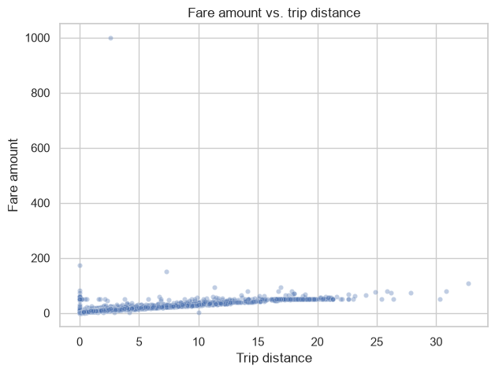
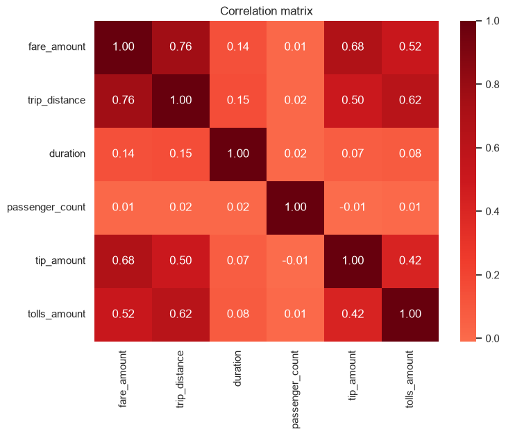
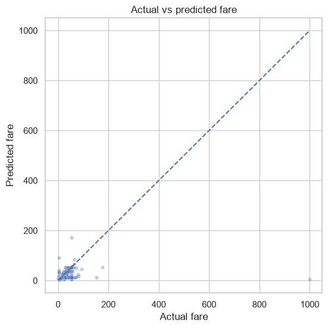
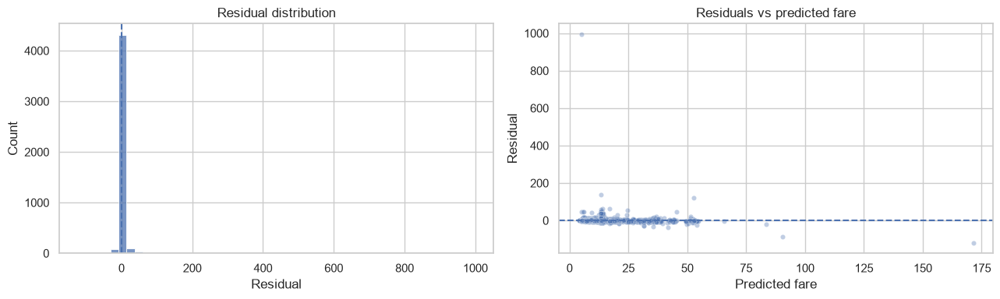
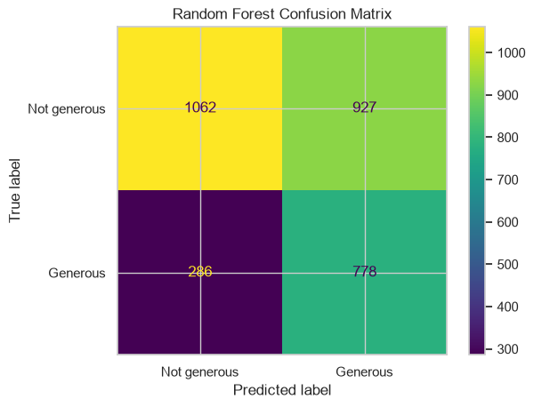
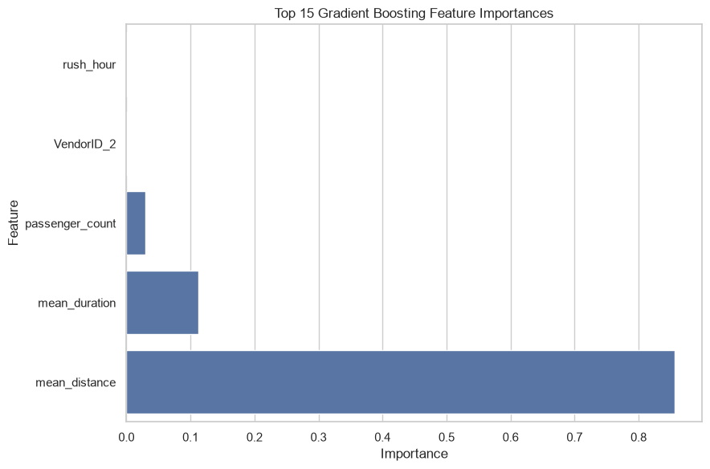

Business Questions
The project treats the dataset as three complementary analytical questions, rather than forcing one model to answer everything.
Payment & Fare
Is there an observed difference in average fare between credit-card and cash trips?
Fare Estimation
How well can fare amount be estimated from information represented in the dataset?
Generous Tipping
Can trip characteristics help identify customers whose tip is at least 20%?
Analytical Workflow
The workflow keeps data preparation, statistical analysis, model selection, final evaluation, and limitations explicit and reproducible.
22,699 rows and 18 columns were inspected. Missing values and duplicates were checked, and only clearly invalid negative fare and duration values were corrected.
Trip timing, distance, duration, fare distributions, payment groups, correlations, and pickup/drop-off patterns were examined.
Welch's two-sample t-test and a confidence interval were used to quantify the observed fare difference between payment groups.
Route-level features were learned from the training partition and applied to validation and test data, with global training fallbacks for unseen or rare routes.
Linear Regression, Random Forest, XGBoost, and Gradient Boosting were compared for fare estimation. Three classifiers were compared for generous tipping.
The selected models were evaluated on held-out test data, followed by error analysis and model-based feature interpretation.
Tools & Techniques
Python Pandas NumPy Scikit-learn XGBoost Gradient Boosting Statistical Testing Feature Engineering Error AnalysisData Foundation
A compact view of the dataset and initial quality checks.
Statistical Finding
The analysis examined whether payment method was associated with observed fare amount.
Credit-card mean $13.43 vs cash mean $12.21.
Interpretation
The result provides strong statistical evidence of a difference in observed group means in this sample. It is an observational association, not evidence that payment method caused the difference.
Fare Estimation
Gradient Boosting was selected using validation MAE and then evaluated on the untouched final test set.
Model Selection
Linear Regression, Random Forest, XGBoost, and Gradient Boosting were compared. Validation MAE was used as the selection criterion, keeping the final test set out of model selection.
Error Pattern
The highest-fare segment, above $16, had an MAE of approximately $9.73. The notebook documents this as an observed error concentration rather than assigning an unsupported cause.
Generous Tipping Classification
A separate classification track examined whether trip characteristics could identify trips where the tip was at least 20%.
Test confusion matrix
778 true positives, 286 false negatives, 927 false positives, and 1,062 true negatives.
How to read it
The model captures a substantial share of generous tippers, but its precision is limited. The result is therefore treated as an exploratory signal rather than a high-confidence customer-level decision rule.
Selected Analysis
Visual outputs showing the exploratory and modeling workflow.






Limitations & Next Steps
Educational dataset
The dataset is educational and should not be treated as representative evidence about the full NYC taxi market.
Temporal validation
The current split is random rather than time-based. A production study should test performance across time.
Feature construction
Production route aggregates should be built from historical or out-of-fold information.
Prediction-time availability
Fields used by the tipping model would need an explicit availability check before operational use.
Project Takeaway
Automatidata demonstrates a broader data-science workflow than a single predictive model: statistical testing to quantify an observed difference, regression for fare estimation, classification for a second business question, and explicit error and limitation analysis.
Project Files
Explore the technical notebook and supporting portfolio deliverables.
Technical Notebook
Full executed workflow covering preparation, EDA, statistical testing, feature engineering, model selection, evaluation, and interpretation.
View NotebookExecutive Summary
A concise summary of the business questions, methodology, key results, limitations, and interpretation.
Open SummaryJob Proposal
A freelancing-focused presentation of the analytical workflow and deliverables.
Open Proposal